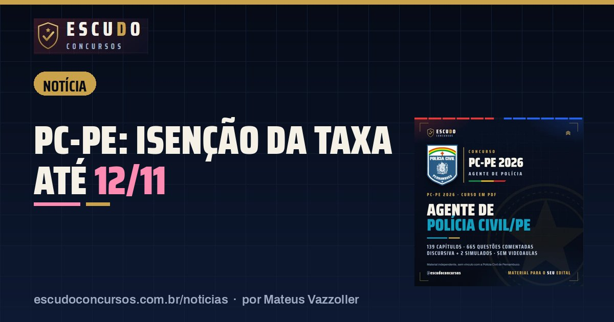

PC-PE Agente de Polícia: pedido de isenção da taxa termina em 12/11, às 18h
NotíciaPublicado em 10 de novembro de 2026 · por Mateus Vazzoller, ESCUDO Concursos

Quem quer vestir o distintivo de Agente da Polícia Civil de Pernambuco sem pagar a taxa de R$ 250,00 tem até quinta-feira, 12/11/2026, às 18h (horário de Brasília) para pedir isenção na Área do Candidato do Cebraspe. Depois desse horário, o pedido é indeferido e a única forma de entrar na disputa pelas 1.200 vagas é o boleto, pago até 18/12/2026.
| Órgão | Polícia Civil de Pernambuco (PCPE), com SAD e SDS |
|---|---|
| Banca | Cebraspe |
| Vagas de Agente | 1.200 |
| Pedido de isenção | 15/10 a 12/11/2026, até 18h de Brasília |
| Taxa sem isenção | R$ 250,00, só por boleto, até 18/12/2026 |
| Prova | 7/3/2027, à tarde |
Quem tem direito à isenção na PC-PE?
O edital segue o art. 19 da Lei estadual nº 14.538/2011 e aceita oito situações. Cada uma pede um comprovante diferente:
| Situação | O que comprova |
|---|---|
| Família de baixa renda no CadÚnico | Número do NIS e declaração de hipossuficiência, preenchidos no próprio sistema |
| Doador regular de sangue | Registro de 3 doações (homens) ou 2 (mulheres) nos 12 meses antes do edital |
| Doador de medula óssea | Inscrição no REDOME há pelo menos 12 meses |
| Doador de livros ao Banco do Livro de Pernambuco | Registro de doação de 50 livros nos últimos 12 meses |
| Ensino médio ou técnico em escola pública há menos de três anos, com baixa renda | Certificado ou histórico escolar e declaração de hipossuficiência |
| Pessoa com deficiência | Laudo emitido nos 36 meses anteriores ao último dia de inscrição |
| Doadora regular de leite materno | Documento de entidade reconhecida pelo Governo do Estado |
| Jurado do Tribunal do Júri em Pernambuco | Certidão de participação no Conselho de Sentença nos últimos dois anos |
Como fazer o pedido até quinta-feira
O pedido é feito só pela internet, na página do concurso no Cebraspe. No caso do CadÚnico, basta informar o NIS e preencher a declaração. Nos outros sete casos, é preciso enviar a imagem legível do documento, em PDF, PNG, JPEG ou JPG, com no máximo 2 MB por arquivo. O edital não aceita pedido pelo correio, por e-mail ou fora do prazo, e o Cebraspe confere os dados do CadÚnico com o órgão gestor. Informação falsa elimina o candidato.
Deixar para a última hora é o erro mais comum: arquivo grande demais ou ilegível derruba o pedido, e não há segunda chance depois das 18h de 12/11.
E depois do pedido?
| Etapa | Data |
|---|---|
| Fim do pedido de isenção | 12/11/2026, 18h |
| Resultado provisório da isenção | 27/11 a 3/12/2026 |
| Recurso contra o indeferimento | 1º a 3/12/2026 |
| Resultado final da isenção | 15/12/2026 |
| Fim das inscrições | 16/12/2026, 18h |
| Último dia para pagar o boleto | 18/12/2026 |
| Provas do Agente | 7/3/2027, à tarde |
Se o pedido for negado, a inscrição só vale com o boleto pago até 18/12/2026. O boleto pode ser pago em banco, lotérica ou Correios, mas precisa ser o gerado no sistema do Cebraspe.
Retificação mudou o conteúdo de Direito Penal
Vale saber antes de montar o plano de estudos: o Edital nº 2 PCPE, de 15 de outubro de 2026, retificou o programa de Noções de Direito Penal do Agente e do Escrivão. A lista agora inclui o Estatuto da Juventude (Lei nº 12.852/2013), ao lado do Estatuto do Desarmamento (Lei nº 10.826/2003) e das disposições constitucionais aplicáveis ao direito penal. A mesma retificação ajustou regras das vagas reservadas a negros, indígenas e quilombolas. O restante do edital ficou igual. Os detalhes da prova estão no guia do concurso PC-PE.
Curso ESCUDO Agente de Polícia Civil de Pernambuco em PDF: 139 capítulos e 665 questões comentadas, Discursiva e 2 simulados, de acordo com o edital. De R$ 47 por R$ 37 com o cupom PCPE37 até 16/12/2026.
Ver o curso
Perguntas frequentes
Até quando posso pedir isenção da taxa da PC-PE?
Até 12/11/2026, às 18h no horário de Brasília, pela Área do Candidato no site do Cebraspe.
Qual é a taxa de inscrição para Agente da PC-PE?
R$ 250,00, paga só por boleto bancário gerado no sistema do Cebraspe, até 18/12/2026.
Quando sai o resultado do pedido de isenção?
O resultado provisório pode ser consultado de 27/11 a 3/12/2026, com recurso de 1º a 3/12, e o resultado final sai em 15/12/2026.
Leia também
- NotíciaPM-SC Soldado: inscrições terminam segunda-feira, 16/11, e a idade máxima conta nesse dia
12 de novembro de 2026 · Concurso PM-SC Soldado: inscrições no Instituto AOCP terminam em 16/11/2026. Quem completa 30 anos até essa data fica de fora. Taxa de R$ 200,00 e prova em 13/12.
- NotíciaContagem/MG Assistente Administrativo: inscrições terminam terça-feira, 17/11, às 16h
12 de novembro de 2026 · Concurso Prefeitura de Contagem/MG: inscrições para Assistente Administrativo vão até 17/11/2026, às 16h, no IBGP. Boleto de R$ 70,00 pago até 18/11.
- NotíciaDPE-PB Técnico da Defensoria: inscrições terminam sexta-feira, 13/11, às 23h59
11 de novembro de 2026 · Concurso DPE-PB: inscrições para Técnico da Defensoria terminam em 13/11/2026, às 23h59, no site da FCC. Boleto de R$ 103,00 pode ser pago até 16/11.
Guia completo do concurso: edital, vagas e o que cai · Mais notícias e dicas de concursos